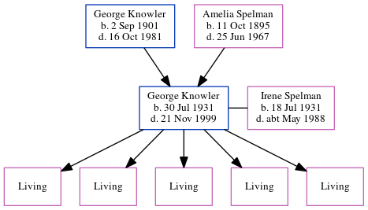

George Thomas Patrick Knowler 1931 - 1999
[ Home ] | [ Calendar ] | [ Surnames Index ] | [ Errors ] | [ Family History ]The child of George Knowler (a farm horseman) and Amelia Spelman, George Knowler, the second cousin once-removed on the mother's side of Nigel Horne, was born in Thanet, Kent, England on 30 Jul 19311,2,3,4,5 and. He married Irene Spelman (with whom he had 5 surviving children Carole M, Kathleen J, Susan A, Diana I and Alison J) in Dover, Kent, England on 15 Jan 19556. On 29 Sept 1939, he was living at Saint Joseph's School, Sevenoaks Road, Orpington, Kent1.
He died on 21 Nov 1999 in Dover4,5 and was buried at Boatmans Hill Cemetery, 22 Woodnesborough Road, Sandwich, Kent after 21 Nov 1999.
Parents
- George Thomas was born on 2 Sept 1901
- Amelia Winifred was born on 11 Oct 1895
Citations
- 1939 Register - Findmypast (was recorded at this address)
- England & Wales deaths 1837-2007 - Findmypast
- England & Wales, Birth Index: 1916-2005 Online publication - Provo, UT, USA: The Generations Network, Inc., 2008.Original data - General Register Office. England and Wales Civil Registration Indexes. London, England: General Register Office. © Crown copyright. Published by permission of the Cont
- England & Wales, Death Index: 1984-2005 Online publication - Provo, UT, USA: The Generations Network, Inc., 2007.Original data - General Register Office. England and Wales Civil Registration Indexes. London, England: General Register Office. © Crown copyright. Published by permission of the Cont
- England Billion Graves cemetery index - Findmypast
- England & Wales, Marriage Index: 1916-2005 Online publication - Provo, UT, USA: The Generations Network, Inc., 2009.Original data - General Register Office. England and Wales Civil Registration Indexes. London, England: General Register Office. © Crown copyright. Published by permission of the Cont
Media
George Knowler, Irerne Spelman - Headstone

1939 Register Transcription - TNA-R39-1269-1269C-005-12
England & Wales deaths 1837-2007 Transcription - BMD-D-1999-11-83202989
England & Wales births 1837-2006 Transcription - BMD-B-1931-3-AZ-000692-111
England & Wales marriages 1837-2008 Transcription - BMD-M-1955-1-AZ-000908-050
England Billion Graves cemetery index - US/BMD/BILLION/024900420
Family Tree
Map
Generated by ged2site. Last updated on Jul 3, 2024
Known Issues
Burial place (Sandwich, Kent, England) has no citations
Location for 29 Sep 1939 (Saint Joseph's School, Sevenoaks Road, Orpington, Kent, England) differs from father's (2 Malthouse Cottages, Mongeham Road, Great Mongeham, Kent, England)
29 Sep 1939: Not living with either parent in childhood when aged 8
Adding date of burial as 'aft 21 Nov 1999'